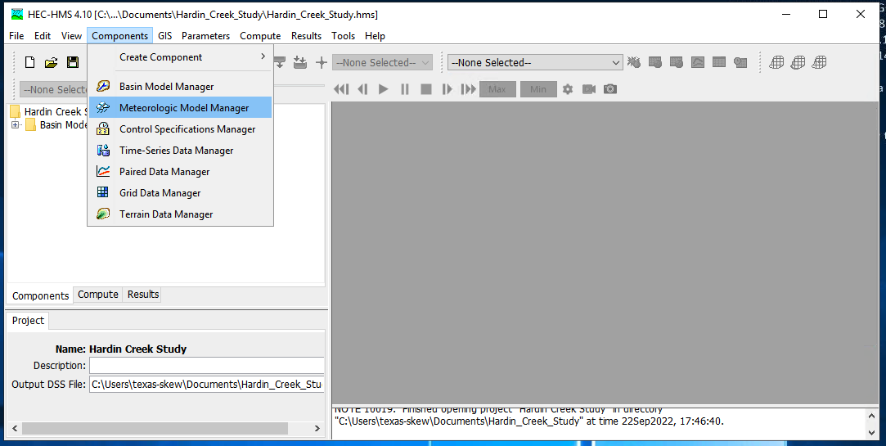
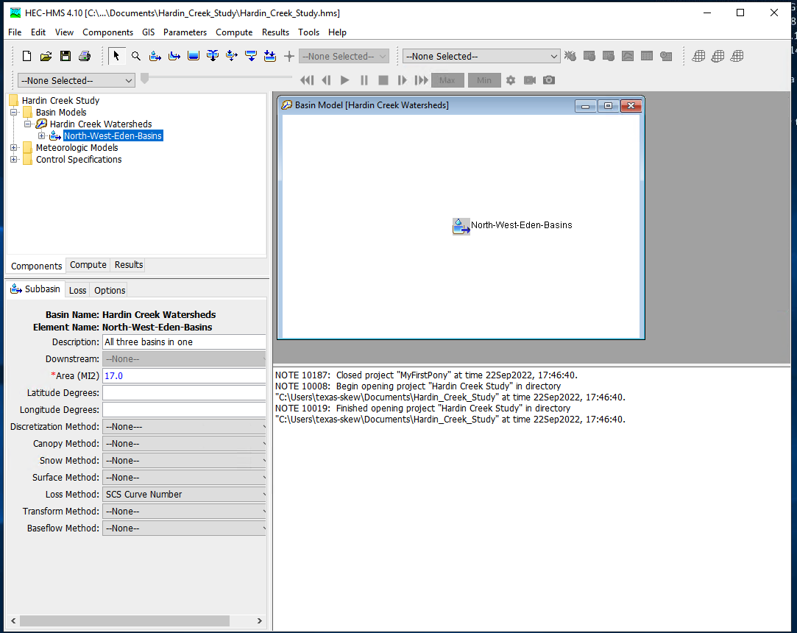
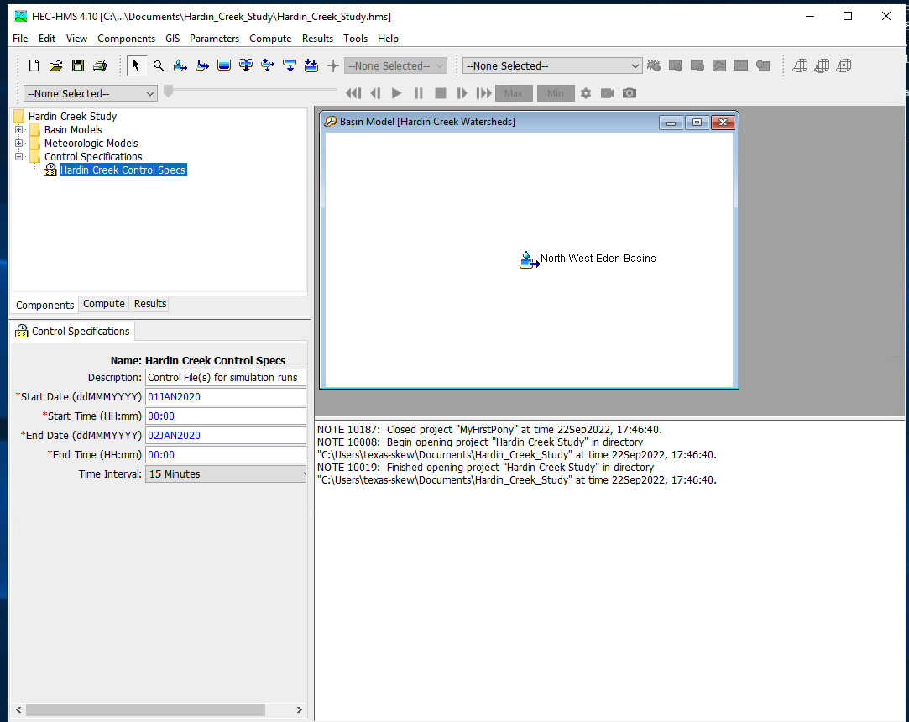
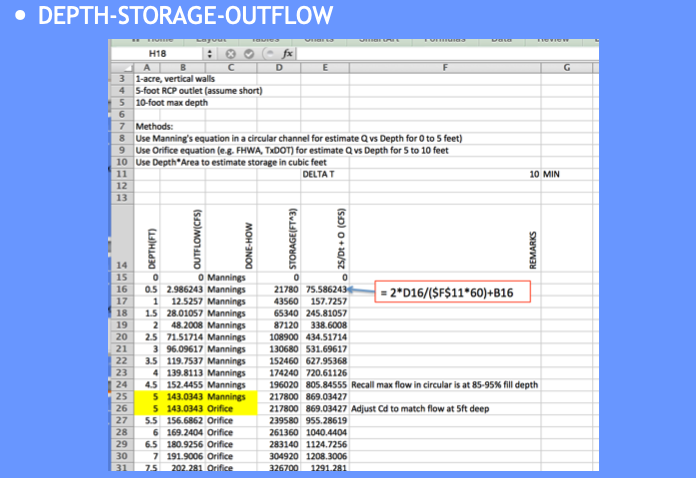
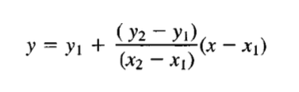
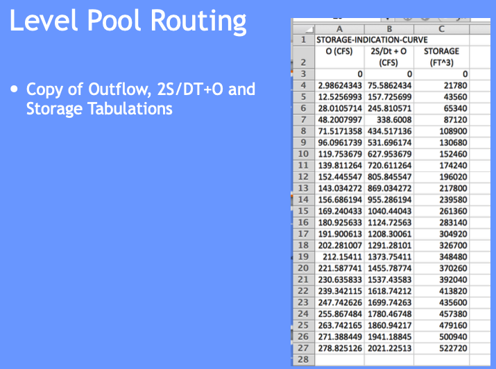
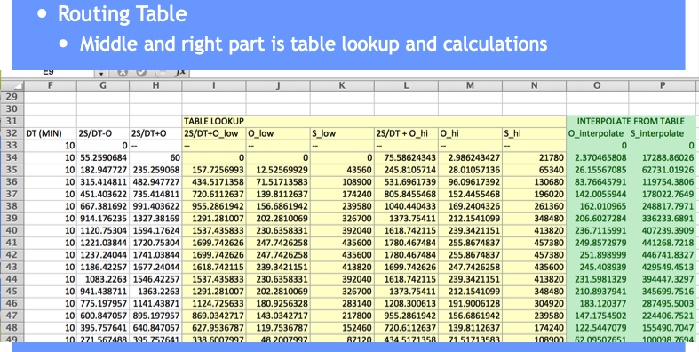
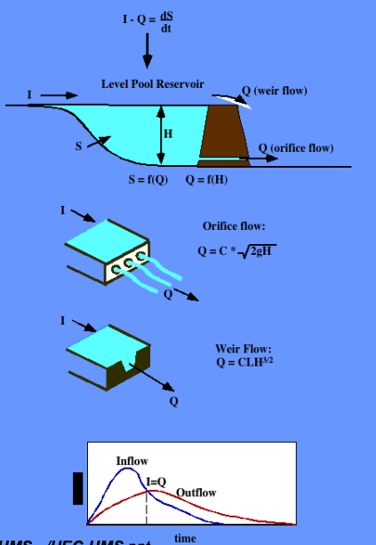
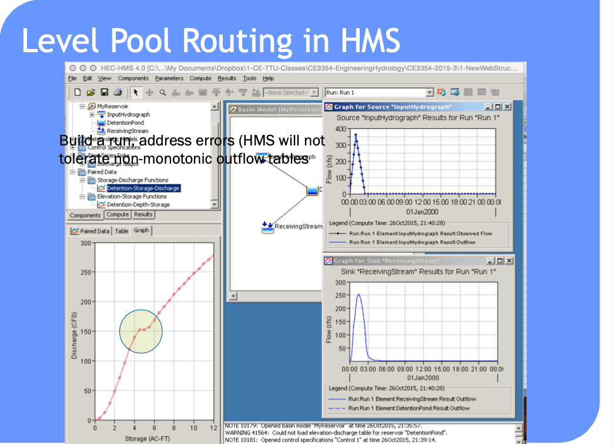
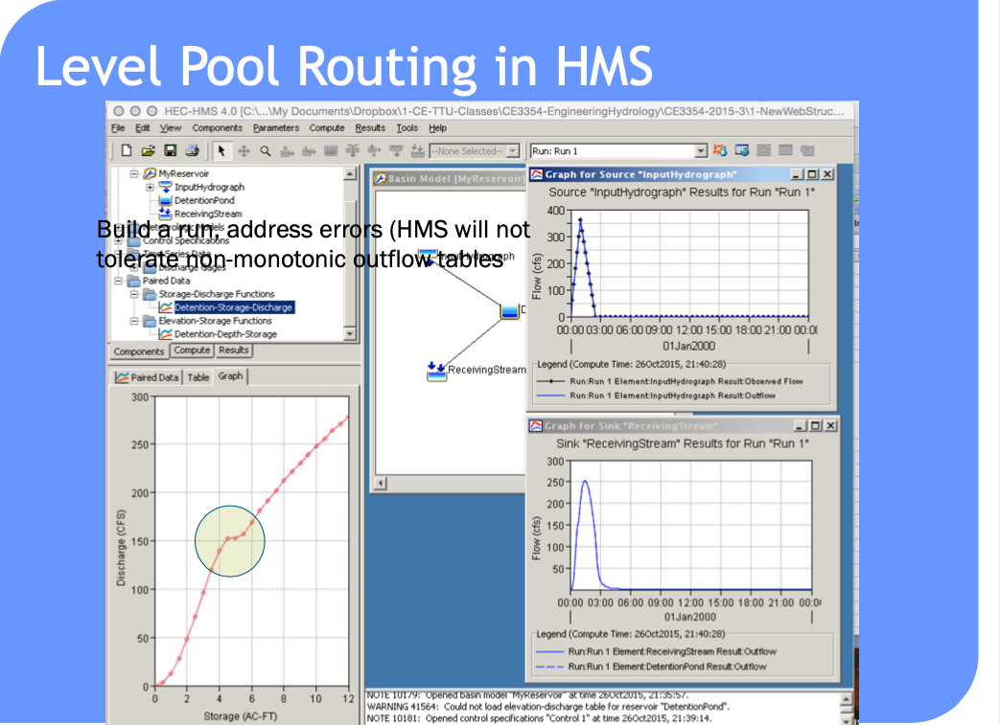

8. Hydrologic Modeling#
Course Website
Hydrologic models are indispensable tools in both research and practice because the routine, site-specific collection of field data for every watershed or infrastructure project is often impractical and cost-prohibitive. Instead of measuring every component of the water cycle at every location of interest, models allow engineers and scientists to simulate hydrologic behavior using a combination of limited field data, physical laws, and conceptual or empirical relationships.
At their core, models are simplified representations of the real world. They aim to capture the essential characteristics of a natural system — especially the relationship between inputs (such as rainfall or snowmelt) and outputs (such as streamflow or infiltration). A good hydrologic model preserves the cause-and-effect, or excitation–response, behavior of the system it represents, even if it omits many secondary details. This simplification enables engineers to predict how a watershed or aquifer will behave under both historical and hypothetical scenarios.
This chapter focuses on two widely used modeling systems for surface water hydrology:
HEC-HMS (Hydrologic Modeling System), developed by the U.S. Army Corps of Engineers, is commonly used for rainfall-runoff modeling, flood forecasting, and watershed-scale planning.
EPA-SWMM (Storm Water Management Model), developed by the U.S. Environmental Protection Agency, is particularly suited for urban stormwater management, including drainage network modeling and green infrastructure evaluation.
In European practice, common alternatives include:
MIKE SHE, a comprehensive and physically-based modeling system developed by the Danish Hydraulic Institute (DHI), which integrates surface water, groundwater, and unsaturated zone flow in a unified framework.
HBV (Hydrologiska Byråns Vattenbalansavdelning), a conceptual rainfall-runoff model widely used for water resource assessments and flood forecasting across northern and central Europe.
While surface water models like those described above simulate watershed behavior at or near the ground surface, groundwater hydrology involves modeling the subsurface. This domain requires fundamentally different tools. Groundwater modeling is almost exclusively performed using MODFLOW, a modular finite-difference flow model developed by the U.S. Geological Survey. MODFLOW and its capabilities are discussed in a later chapter of this text.
Hydrologic modeling is not a replacement for engineering judgment or data collection, but rather a decision-support tool that helps quantify, interpret, and communicate complex hydrologic behavior. The remaining sections in this chapter walk through the fundamental concepts, data requirements, and practical workflows associated with HEC-HMS and SWMM, and demonstrate their application to representative problems in watershed hydrology.
Readings#
Videos#
There are a lot of videos on YouTube suitable for self-training to use HEC-HMS (non-gridded). The gridded HMS is a more advanced exercise (you have to have GIS skills first) and is the obvious extension of lumped (non-gridded) models – but outside the course scope.
Spreadsheets#
Hydrologic modeling in Engineering Design#
In most situations a model refers to representing real-world situations in a mathematical structure that can be solved using a computer. Occasionally a physical or analog model is used in hydrology, but these kinds of models are becoming more and more rare because of the time and cost involved. Well constructed computer models (not just the program) can often do an excellent job of modeling, although some problems are geometrically complex enough to justify physical or analog modeling.
With computer modeling a large number of variables and/or a large amount of data can be relatively quickly manipulated, increasing the chances of an accurate and defendable answer to the particular question (that the model was built to answer).
The first step in developing any hydrologic model is the development of a conceptual model. During this stage of model development the existing are assembled. This data includes, but is not limited to, water company data on withdrawal rates and water levels; state and municipal well-permitting information; and previously published reports and maps. The documents are then reviewed to determine the system boundaries; extent and thickness of hydrologic units; aquifer recharge; ground water and surface water elevations; stream discharge and leakage to aquifers; aquifer parameters; and other characteristics unique to the situation to be modeled.
Usually some fieldwork will be necessary to fill in the gaps. A data collection plan is prepared that sets out the field strategy for additional data collection. When the fieldwork is complete, the existing and new data are analyzed. The existing conceptual model is then revised and updated to incorporate data from the field program. This step ensures that all previously identified data needs have been satisfied and serves as a springboard for the computer modeling effort.
With the conceptual model in place, it’s time to select the model code or computer program to be used for the well head protection simulations. Some states require the use of a particular code. In most cases, several modeling codes are available that are capable of adequately modeling the problem. The choice should be based, if possible, on the modeler’s preference, although consideration must be given to what the relevant agency personnel are familiar with, otherwise, considerable time and money may be spent defending your code and training agency personnel.
Once the flow model code has been selected, the boundaries and parameters identified in the conceptual model are put into a form suitable for modeling. This step includes determining the number of model layers, design of the model grid, determining the initial values of parameters and hydrologic stresses, and setting boundary conditions.
The purpose of calibration is to establish that the model can reproduce field-measured values. This procedure is done by adjusting the model parameters (hydraulic conductivity, storage coefficient, etc.) and stresses (recharge, up land underflow, etc.) to produce the best match between simulated and observed water related variables.
Hydrologic modeling, climate change impacts, and water management
Real-world case studies (dams, levees, stormwater systems)
Course Review and Final Project Presentations#
Summary of key concepts and Q&A session
Final Lab/Exercise: Group Project on a Hydrologic Case Study
8.1 HEC-HMS#
HEC-Hydrologic Modeling System (HMS) the U.S. Army Corps of Engineers’ software package for modeling the complete hydrologic processes of dendritic watershed systems. The software includes many traditional hydrologic analysis procedures such as event infiltration, unit hydrographs, and hydrologic routing. HEC-HMS also includes procedures necessary for continuous simulation including evapo-transpiration, snowmelt, and soil moisture accounting. Advanced capabilities are also provided for gridded runoff simulation using the linear quasi-distributed runoff transform (ModClark). Supplemental analysis tools are provided for model optimization, forecasting streamflow, depth-area reduction, assessing model uncertainty, erosion and sediment transport, and water quality. The software and documentation are available free of charge.
Note
Some of the stated capabilities above are marketing BS, but the software is a widely used tool. A practicing Civil and Enviornmental Engineer would be expected to be proficient in HEC-HMS and/or SWMM
Proficiency in HEC-HMS involves:
Understanding of Hydrologic Processes:
A solid grasp of hydrologic principles and processes, such as rainfall-runoff relationships, loss models, baseflow separation, and channel routing.Model Development:
Ability to create and configure hydrologic models, including defining watershed boundaries, inputting hydrologic data (precipitation, temperature, etc.), and setting up sub-basins, reaches, junctions, and reservoirs.Selection and Application of Methods:
Knowledge of various computational methods available in HEC-HMS for different hydrologic processes, such as loss models (e.g., SCS Curve Number, Green-Ampt), transform methods (e.g., SCS Unit Hydrograph, Clark Unit Hydrograph), and routing methods (e.g., Muskingum, Kinematic Wave).Data Management:
Competence in importing and managing input data, such as time series data for precipitation, temperature, streamflow, and observed data for model calibration.Model Calibration and Validation:
Skill in calibrating the model parameters to match observed data, and validating the model’s performance with different data sets to ensure its reliability.Simulation and Analysis:
Capability to run simulations, interpret results, and analyze hydrographs, peak flows, and flow volumes for different scenarios (e.g., different rainfall events or land-use changes).Advanced Features:
Familiarity with advanced features, such as simulating stormwater management practices, running continuous simulations, or using the software for flood forecasting.Troubleshooting and Problem-Solving:
Ability to identify and resolve issues related to model setup, data inconsistencies, and convergence problems.Documentation and Reporting:
Proficiency in documenting the modeling process, assumptions, and results, as well as preparing professional reports and presentations.
Being proficient in HEC-HMS means not only knowing how to use the software’s interface but also understanding the underlying hydrologic concepts and methodologies, enabling effective and accurate hydrologic modeling and analysis.
History of HMS#
HMS Evolved from HEC-1 as part of a “new-generation” software emphasis circa 1990. The main end-user result is an Integrated user interface to speed up data input and enhance output interpretation.
Overview#
HMS is a complex and sophisticated tool:
Intended to be used by a knowledgeable and skilled operator
Knowledge and skill increase with use
The skills are perishable
Data management#
Graphical User Interface (GUI)
Multiple input files
Multiple output files
Time-series in HEC-DSS
All files arranged in a Project which is the fundamental data organization structure
Paths to individual files
Can compress and e-mail entire project folders and have them run elsewhere (assuming the files are stored in the folder in their entirety)
Hydrologic Conceptualization#
Organizes precipitation, watershed interaction, and runoff into major elements
Basin model and sub-basin description
Downstream connections: how the system components are interconnected
Loss model: how rainfall is converted into excess rainfall
Transformation model: how the excess rainfall is redistributed in time and moved to the hydrologically nearest outlet (unit hydrographs, routing elements …)
Meterological model
Raingage specifications and assignment to different sub-basins
Time-series models: Supply input hyetographs; Supply observed hydrographs
Simulation control
Supply instructions of what, when, how to simulate
In the end HEC-HMS is a Hydrologic Model and can estimate:
Peak Flows
Hydrographs
It can perform
Hydrograph Routing
Stream reaches
Reservoirs and detention basins
Hydrograph lagging and attenuation
Sub-basin modeling (if appropriate)
Precipitation to Runoff
Abstractions
Fraction of precipitation that does not contribute to runoff (and ultimately discharge)
Routing
Watershed routing (unit hydrograph and similar concepts)
Stream (Channel) routing
Reservoir (Storage) routing
Installation#
Navigate to the HEC-HMS website, select software appropriate for your computer.

For a typical Windoze machine:
Download an installer
Run the installer
Accept the defaults (otherwise YOYO!)
Upon sucessful install you should be able to select the program and launch it and get the control interface
To install supplied examples, navigate to the help tab (in the HMS interface) and select download examples
Note
Usually the above works, unless you try something fancy and are clueless. If you cannot figure it out go here
HEC-HMS Minimal Model#
A minimal model consists of
Basin Model
Meteorological Model
Control Specifications
Basin Model Specification#
For this example we will use the Hardin Creek basin which is about 17 square miles. For the example we will neglect the reservoirs and model the whole thing as a single watershed.
To create a basin model, select Components from the menu then Basin Manager

As with most HMS creator dialogs, you next name the basin.

Meterological Model Specification#
To create a meterological model, select Components from the menu then Meterological Model Manager

As with most HMS creator dialogs, you next name the model.

Control Model Specification#
The last component is the control specification model (with dates and times for the simulation period). To create a control model, select Components from the menu then Control Model Manager

Then next name the model.

Parameterizing the models#
Now that the pieces are built, we need to supply watershed and rainfall characteristics to the components for a useable model. First we will simulate the entire watershed as a single basin, with CN=98, and all other watershed-based model components disabled (i.e. None)
First build the single basin

Then supply the inputs, first area and the CN model. Disable all the remaining methods (choose –None–)

Then the CN parameters (same as in class)

Then supply the meterological model inputs, for the example we will use an SCS design storm, in HMS its called “hypothetical” storm.

Then be sure the correct basins are attached to the precipitation input signal

Next select the storm itself and supply model inputs

Now select the control specifications and provide needed time values (must be calendar/clock time, HMS does not easily handle elapsed times - you can use fake dates as needed)

Now one can select simulation run builder


Once these are complete select Finish and the run manager is loaded, next select the particular run to active the compute engine

At this point it should be ready, this is a good time to save the project, then reload the saved project from the file menu. Now attempt to run the simulation by selecting the exploding raindrop!

With some luck it works like

With a suseccful run we can examine various output features - to complete this notebook section we will just use a default chart of runoff from the watershed. Select the Results/Element_Graph to get:

There are tutorials and examples in the User Manual for the software.
8.2 Hydrograph Routing#
Hydrograph routing is a technique used in computational hydrology to predict the temporal distribution of water flow in rivers, channels, and reservoirs in response to inflow events. It involves calculating the downstream movement of water through a channel or watershed, accounting for the storage and movement of water within the system. The primary objective is to determine the changes in flow characteristics, such as discharge, over time and space as water travels from upstream to downstream points.
In practical applications, hydrograph routing is used for flood forecasting, design of hydraulic structures, and water resource management. There are two main types of routing:
Hydrologic Routing: This approach uses simplified methods based on the conservation of mass and empirical relationships. Techniques such as the Muskingum method, kinematic wave model, and unit hydrograph are common. Hydrologic routing is often used for its simplicity and efficiency, particularly in cases where detailed data is not available.
Hydraulic Routing: This method uses the principles of fluid mechanics, typically the continuity equation and the momentum equation (Saint-Venant equations), to model the movement of water through a channel. It provides detailed information about flow depth and velocity but requires comprehensive data and computational effort. (These techniques are introduced and applied in CE 3372 and are the subject of the entire course CE 4353)
Note
In the context of HEC-HMS, this background serves as a natural precursor to building models with multiple interconnected sub-basins. Routing represents the mechanism by which information—specifically, flow—is transmitted from one component to the next. As you work through the examples, remember that the actual computations are carried out within HEC-HMS, not in our homebrew scripts or spreadsheets, even though the underlying algorithms are the same.
Hydrograph routing informs how different factors, such as channel shape, roughness, and basin characteristics, influence the timing and magnitude of peak flows. The results are critical for designing effective flood control measures, optimizing reservoir operations, and designing suitable drainage systems.
Routing Concept
Routing simulates movement of a discharge signal (flood wave) through hydrologic/hydraulic elements called reaches.
Accounts for storage in the reach and flow resistance.
Allows modeling of a basin comprised of interconnected sub-basins
Hydrologic routing – uses continuity equation (HEC-HMS)
Hydraulic routing – uses continuity and momentum (St. Venant Equations; HEC-RAS, EPA-SWMM)
Routing-Hydrologic and Hydraulic#
Problem:
you have a hydrograph at one location (I)
you have reach characteristics (S = f(I,O))
Need:
a hydrograph at different location (O)
This is a “routing” situation. The “reach” can be a stream, river, reservoir or some similar feature; the element must have the ability to convey (transmit water) and accumulate (store water). Routing is not applied to overland flow per-se; although time-area methods are arguably a type of routing.
The bar heights (volumes in storage, entering, and leaving the hydrologic reach) as depicted below are usually quantified in a routing table - its conceptually like a bank account that relates revenue, expenses, and account balance.

Hydrologic Routing#
Hydrologic routing techniques use the equation of continuity and some linear or curvilinear relation between storage and discharge within the river. The effects of momentum are neglected.
Methods include:
Lag Routing (no attenuation). Useful to get connectivity correct in a model
Modified Puls (level pool routing). Useful for reservoirs
Muskingum-Cunge (a simplified type of hydraulic model). Useful to approximate stream/river behavior without resorting to true “hydraulics” considerations
Level Pool Routing#
Technique to approximate the outflow hydrograph passing through a reservoir with the pool (water surface) always level.
Uses a reach (reservoir) mass balance equation
and a storage-outflow relationship.
Variable names are typically changed:
\(Q_{in} => I_t\) and \(Q_{out} => O_t\)
So the reach mass balance is
The time averaged values are taken at the beginning and end of a useful time interval, and the first-order difference quotient is used to approximate the rate of change in storage.
The reach mass balance is then
Then some of that algebra stuff ….

More algebra stuff ….

Some more algebra still and recognize need to deal with two unknowns …

The storage-outflow function leverages hydraulics where possible. For example flow through holes (orifice flow), over spillways and weirs, and simplified culvert flow situations.


Use outlet-works hydraulics, and depth-area-storage to build a storage-outflow function
Once we have that function, then build an auxiliary function (tabulation) called the storage-indication curve (function)
here \(g\) is some function.
Once have the storage-indication curve then can use the reach mass balance to estimate the numerical value of :
Then use the storage-indication curve to find the value of outflow, subtract that from the result above, and now have both the end-of-interval outflow and storage.
Note
Probably should rewrite the example in Jupyter/iPython to be consistent with modern technology
Example#
Similar to CMM 8.2.1 pg 247-252; but
Shows how the storage-indication curve is determined using hydraulics
Illustrate use of spreadsheet programming needed to make the actual computations

Tasks:
Build a depth-storage table
Build a depth-outflow table
From 0 to 5 feet deep use Manning’s equation in a circular conduit
From 5+ to 12 feet deep use Orifice equation (neglecting frictional losses)
Save a depth-storage-outflow table for use in storage-indication curve
Build the routing table (apply the reach mass balance)
For depth-outflow here is a Manning’s Circular Cross Section Discharge Calculator (xls).

Here is an Orifice Discharge Calculator (xls).

# iPython Circular Mannings Calculator (Beware: No Error Checking!)
########### INPUT VALUES ################
manningsn = 0.013 # supply n value look up in a table
depth = 5.0 # depth in feet
diameter = 5.0 # culvert/outlet diameter in feet
slope = 0.003 # culvert/outlet slope (feet/feet)
########### MATH PACKAGE ################
import math
import sys
########### CALCULATIONS ################
angle = math.acos(1.0 - 2 * depth / diameter)
area = (diameter**2)*(angle-math.sin(angle)*math.cos(angle))/4.0
perimeter = angle*diameter
radius = area/perimeter
discharge = (1.49/manningsn)*area*(radius**(2/3))*math.sqrt(slope)
velocity = discharge/area
########### RESULTS ###############
print("Mannings n : %10.3f -- " %(manningsn))
print(" Depth : %10.3f ft. " %(depth))
print(" Diameter : %10.3f ft." %(diameter))
print(" Slope : %10.3f ft./ft." %(slope))
print(" Angle : %10.3f radians" %(angle))
print(" Area : %10.3f sq.ft." %(area))
print(" Perimeter : %10.3f ft." %(perimeter))
print(" Discharge : %10.3f cu.ft./sec" %(discharge))
print(" Velocity : %10.3f ft/sec" %(velocity))
Mannings n : 0.013 --
Depth : 5.000 ft.
Diameter : 5.000 ft.
Slope : 0.003 ft./ft.
Angle : 3.142 radians
Area : 19.635 sq.ft.
Perimeter : 15.708 ft.
Discharge : 143.034 cu.ft./sec
Velocity : 7.285 ft/sec
# iPython Orifice Calculator (Beware: No Error Checking!)
########### INPUT VALUES ################
coefficient = 0.574 # orifice coefficient (table lookup)
depth = 7.0 # depth above top of orifice in feet
diameter = 5.0 # orifice diameter in feet
slope = 0.003 # culvert/outlet slope (feet/feet)
########### MATH PACKAGE ################
import math
import sys
########### CALCULATIONS ################
if depth >= 0:
centerline = depth + diameter - 0.5*diameter
area = 0.25*math.pi*diameter**2
discharge = coefficient*area*math.sqrt(2.0*32.2*centerline)
velocity = discharge/area
else:
print("not orifice flow")
########### RESULTS ###############
print(" Orifice Coef : %10.3f -- " %(coefficient))
print(" Depth : %10.3f ft. " %(depth))
print(" Diameter : %10.3f ft." %(diameter))
print("Depth above centerline : %10.3f ft." %(centerline))
print(" Area : %10.3f sq.ft." %(area))
print(" Discharge : %10.3f cu.ft./sec" %(discharge))
print(" Velocity : %10.3f ft/sec" %(velocity))
Orifice Coef : 0.574 --
Depth : 7.000 ft.
Diameter : 5.000 ft.
Depth above centerline : 9.500 ft.
Area : 19.635 sq.ft.
Discharge : 278.770 cu.ft./sec
Velocity : 14.198 ft/sec
Use these and basin geometry to build depth-storage outflow table.

Copy the depth-storage-outflow to the routing table (we are going to build) – we need it as a tabulation so we can use INDEX and MATCH to get values from the table for interpolation (Eq. at bottom CMM pg 249)






The full spreadsheet, with the interpolation function as an Excel 94 macro sheet (you could code in place, will have a few more columns) is on server as Routing Example.
Such computations are a lot easier to perform in HEC-HMS because it handles (1) building the routing table and (2) selecting a decent time step
Can also use level pool routing for a stream reach (next meeting).
Reservoir Concepts#
Reservoir
A pond, lake, or basin, either natural or artificial, for the storage, regulation, and control of water.
Regulated reservoir
Outflow controlled by moveable gates and valves.
Head, and valve settings determine outflow.
Unregulated reservoir.
Outflow controlled by fixed weirs and orifices.
Head and constructed weir height determine outflow.
Reservoir Storage#
Storage Representations≈
Storage vs. Discharge
Storage vs. Elevation
Surface Area vs. Elevation

Discharge Representations
Spillways, Weirs
Orifices, Sluice gates
Pumps
Dam Breach
HEC-HMS Constructs#


 


Routing-channel and reservoir#
Reservoir routing
Account for storage in a reservoir
Unique storage-discharge relationship
Channel routing
Account for storage in channel as well as travel time
Storage-discharge relation in channel is non-unique
Can treat channel as a series of reservoirs to mitigate looped effect.
HEC-HMS Files#
The reservoir model above is stored below as an entire HMS project. Download, etxtract, move into a suitable work directory and you should be able to replicate in HEC-HMS
8.3 HEC-HMS Example (multiple Subbasins with Routing)#
This example uses data from AshCreek Data (zip). The .ZIP file is an old homework problem, learners had to convert the provided data files into a format that HEC-HMS could process then analyze the watershed and interpret results and answer some questions. The original problem statement is shown below
Problem Statement
HEC-HMS Exercises
In this folder are rainfall-runofff data for three storms on Ash Creek watershed in Dallas, Texas.
Included are some base maps to help locate the watershed.
The maps are simply PDF files and are not georeferenced, so other than pretty pictures the maps are useless.
Using HEC HMS model the Ash Creek Watershed using a loss model of your choice and a transformation model of your choice. Model the watershed as a lumped system (one sub-basin, no routing).
(1) Estimate parameter values in the model without using the time-series data (synthetic hydrology). Document how you make the estimates.
(2) Test your estimated with the 1973_0603 storm, how well did your synthetic approach perform.
(3) Use the 1973_0603 storm to “calibrate” your model. Trial-and-error is appropriate, or you chould choose the internal calibration tools in HMS, also your choice. Demonstrate the calibrated model by capturing the model output for the storm (i.e. a time series of computed and observed discharge). Use the weighted accumulated precipitation is the input (since we don’t have the raingage locations).
(4) Test the calibrated model with the other two storms (DO NOT CHANGE PARAMETERS IN THE MODEL). Assess model performance with thses other two real storms. What do you conclude?
(5) Now try to adjust the parameters to obtain a best “average” performance. What do you conclude?
(6-8) Repeat steps 3-5 with the watershed subdivided into multiple sub-basins, with routing. Use any subdivision scheme you think is appropriate, but use at least 3 sub-basins.
Did subdivision confer any performance advantage? At what cost?
(9) Presumably you represented the current conditions with some variable that reflects the land coverage. Estimate the watershed response to the historical storms if the entire watershed is impermeable, and very smooth (low friction).
Prepare a brief report on the modeling effort, be sure to address each question above. Due in 2 weeks.
You will need to download the HEC-HMS user manual and do some reading in the manual as well as in the hydrology literature and textbook to complete this exercise.
Here is a look at the watershed

The study area is Highland Road and Ash Creek, Dallas, TX. Area is residential subdivisions, light industrial parks, and some open parkland. White Rock Lake is water body to the North-West
Now if we make measurements we might arrive at

So one can model as just this lumped basin or apply some subdivision like:
If we use the subdivided case, we will need routing elements and parameters for each subbasin.
Red basin
Green basin

Blue basin

Combined
Using measuring tools (GIS, Acrobat Pro, Paint, ….) determine area, and lengths, get CN using NRCS tools.
Sub-Basin ID |
Property |
Value |
|---|---|---|
Red |
AREA |
1.87 sq.mi. |
Red |
CN |
86 |
Red |
Dist. To Outlet |
0 |
Green |
AREA |
2.67sq.mi. |
Green |
CN |
86 |
Green |
Dist. To Outlet |
4227ft |
Blue |
AREA |
2.39sq.mi |
Blue |
CN |
86 |
Blue |
Dist. To Outlet |
2660 ft |
Then estimate travel times for the routing elements
Note
HEC-HMS requires a lot of external (to the program) thinking and preparation.
Try to gather data reports before modeling if at all possible.
Keep a notebook handy to write down intermediate values as needed.
Update
The scripts below process the original Ash Creek Data and form correct ASCII output files, to load into Excel, and pass onto HEC-HMS
# Process runoff files
# refactor from original R script by Sensei + OpenAI assistant
# force memory purge
%reset -f
import pandas as pd
import numpy as np
from scipy.interpolate import interp1d
import matplotlib.pyplot as plt
from io import StringIO
# Load file while skipping rows that start with '#'
#fileinput = "./AshCreekData/ashcreek_1973_0603/unit_sta08057320_1973_0603.txt"
fileinput = "./AshCreekData/ashcreek_1975_0527/unit_sta08057320_1975_0527.txt"
#fileinput = "./AshCreekData/ashcreek_1978_0520/unit_sta08057320_1978_0520.txt"
# Custom function to skip comment lines
from io import StringIO
def skip_hash_lines(filepath):
with open(filepath, 'r') as f:
lines = [line for line in f if not line.lstrip().startswith('#')]
return pd.read_csv(StringIO("".join(lines)), sep=r"\s+")
# Use the custom reader
df = skip_hash_lines(fileinput)
# Extract necessary columns
time_col = df["HOURS_PASSED"]
runoff_col = df["RUNOFF"]
# Create uniform time vector (0.25 hr interval)
elapsed_time = np.arange(0, time_col.iloc[-1] + 0.25, 0.25)
# Linear interpolation
interpolator = interp1d(
time_col,
runoff_col,
kind='linear',
bounds_error=False,
fill_value=(0, runoff_col.iloc[-1])
)
interpolated_runoff = interpolator(elapsed_time)
# Plot result
plt.plot(elapsed_time, interpolated_runoff)
plt.xlabel("Elapsed Time (hrs)")
plt.ylabel("Runoff (CFS)")
plt.title("Interpolated Runoff Curve")
plt.grid(True)
plt.show()
# Create output filename by replacing 'unit' with 'u15m'
outfile = fileinput.replace("unit", "u15m")
# Write output to CSV file
with open(outfile, "w") as f:
for t, r in zip(elapsed_time, interpolated_runoff):
f.write(f"{t:.2f},{r:.6f}\n")
# Process rainfall files
# refactor from original R script by Sensei + OpenAI assistant
# force memory purge
%reset -f
import pandas as pd
import numpy as np
from scipy.interpolate import interp1d
import matplotlib.pyplot as plt
from io import StringIO
# Load file while skipping rows that start with '#'
#fileinput = "./AshCreekData/ashcreek_1973_0603/rain_sta08057320_1973_0603.txt"
fileinput = "./AshCreekData/ashcreek_1975_0527/rain_sta08057320_1975_0527.txt"
#fileinput = "./AshCreekData/ashcreek_1978_0520/rain_sta08057320_1978_0520.txt"
# Custom function to skip comment lines
from io import StringIO
def skip_hash_lines(filepath):
with open(filepath, 'r') as f:
lines = [line for line in f if not line.lstrip().startswith('#')]
return pd.read_csv(StringIO("".join(lines)), sep=r"\s+")
# Use the custom reader
df = skip_hash_lines(fileinput)
# Extract necessary columns
time_col = df["HOURS_PASSED"]
rainfall_col = df["ACCUM_WTD_PRECIP"]
# Create uniform time vector (0.25 hr interval)
elapsed_time = np.arange(0, time_col.iloc[-1] + 0.25, 0.25)
# Linear interpolation
interpolator = interp1d(
time_col,
rainfall_col,
kind='linear',
bounds_error=False,
fill_value=(0, rainfall_col.iloc[-1])
)
interpolated_rainfall = interpolator(elapsed_time)
# Plot result
plt.plot(elapsed_time, interpolated_rainfall)
plt.xlabel("Elapsed Time (hrs)")
plt.ylabel("Precipitation (watershed inches)")
plt.title("Interpolated Accumulated Rainfall Curve")
plt.grid(True)
plt.show()
# Create output filename by replacing 'unit' with 'u15m'
outfile = fileinput.replace("rain", "r15m")
# Write output to CSV file
with open(outfile, "w") as f:
for t, r in zip(elapsed_time, interpolated_rainfall):
f.write(f"{t:.2f},{r:.6f}\n")
8.X Placeholder#
8.X Placeholder#
8.5 EPA-SWMM#
Warning
This section is under development. First deployment is anticipated in October 2025. Use the navigation links on the right to jump to subsequent sections.
The EPA Storm Water Management Model (SWMM) is a comprehensive software tool developed by the U.S. Environmental Protection Agency for simulating the quantity and quality of stormwater runoff in urban areas. First developed in 1971, SWMM has become one of the most widely used models for planning, analyzing, and designing urban drainage systems, including storm sewers, combined sewers, and other conveyance systems. Its ability to simulate dynamic rainfall-runoff relationships, along with pollutant transport, makes it a key tool for engineers working on stormwater management, flood control, and water quality improvement projects.
SWMM allows users to model the physical processes involved in stormwater runoff, including rainfall, infiltration, evaporation, and surface flow, as well as the behavior of drainage networks under varying conditions. The model supports continuous or event-based simulation, which enables long-term studies of stormwater systems under different climate conditions. Additionally, SWMM includes a variety of features for modeling green infrastructure practices such as permeable pavement, rain gardens, and green roofs, which are essential for sustainable stormwater management. Its versatility and ability to incorporate both conventional and innovative infrastructure make it an invaluable tool for engineers tasked with addressing complex urban water challenges.
Interface Tour#
Example of a Minimal Model#
Workshop#
Junctions#
Conduits#
Catchments#
Raingages#
SWMM Hydrology#
This section focuses on hydrological modeling using the Storm Water Management Model (SWMM), a widely used software tool for simulating rainfall-runoff processes in urban environments. Understanding the key hydrological concepts within SWMM is essential for adequately modeling stormwater systems, managing surface runoff, and designing urban drainage solutions.
It reviews important hydrological principles such as rainfall-runoff generation and by examples demonstrates how each concept is modeled within SWMM.
Upon completion you should have rudimentary understanding of:
How hydrological concepts are represented in SWMM; in particular how SWMM simplifies and structures complex hydrological processes, such as surface runoff generation, infiltration losses, and flow routing.
How to input data into SWMM: Using basic data inputs like rainfall, land use, and surface characteristics, the section demonstrates how to set up a model, showing what types of data are required and how they are incorporated into the software.
How to generate and interpret results: After running a SWMM simulation, the section demonstrates how to analyze the results, which typically include hydrographs, flow rates, and water quality data. It also covers how to interpret these outputs to make informed decisions regarding stormwater management.
SWMM/Hydrology Review#
Design Storms
Runoff Generation
Raingages
SWMM Conceptualization(s)
Catchment-to-Catchment Routing
SWMM Example
Design Storms#
SCS Type-Curves
Other Dimensionlass Hyetographs
NOAA Atlas 14
Runoff Generation#
Proportional Model (Rational approximation)
NRCS CN Model
Horton Infiltration Excess Model
Green-Ampt Infiltration Excess Model
Raingages#
Using HEC-HMS to generate input
Manual entry
Elapsed Time versus Calendar/Clock Time
SWMM Conceptualization(s)#
Catchment-to-Catchment Routing#
SWMM Conduits#
SWMM Storage#
End of Section#
End of Section#
Exercise(s)#
LINK HERE
AUTOCOMPILE CODE HERE